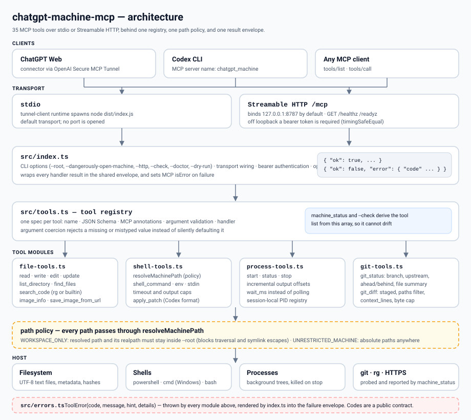
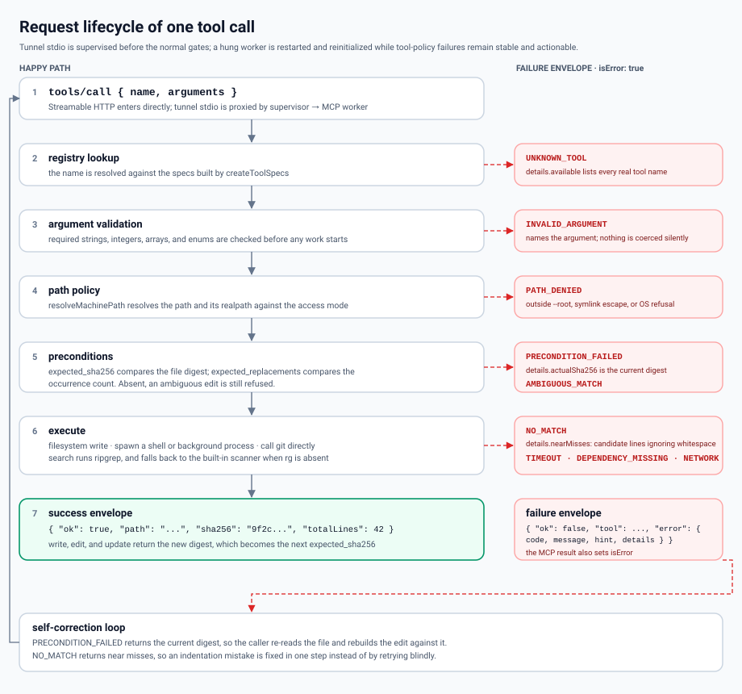

machine_status, read_file, read_files, project_snapshot, list_directory, find_files, file_info, image_info, search_codeLocal MCP bridge สำหรับให้ ChatGPT client ที่เชื่อถือได้ตรวจสอบ แก้ไข build และควบคุมเครื่องพัฒนา Windows ผ่าน tools ที่กำหนดไว้อย่างชัดเจน
คู่มือการติดตั้ง · Source repository
English · ไทย
Streamable HTTP เข้า MCP server โดยตรง ส่วน stdio จาก tunnel จะผ่าน src/supervisor.ts ซึ่งแยก src/index.ts เป็น worker process และ restart/reinitialize worker เมื่อ crash หรือเกิน hard request deadline ภายใน worker จะมี registry เดียวตรวจชื่อ tool และ arguments ก่อนผ่าน policy, preconditions, idempotency และ handler ที่แตะ host ได้


machine_status, read_file, read_files, project_snapshot, list_directory, find_files, file_info, image_info, search_codewrite_file, edit_file, update_file, apply_patchshell_command, start_process, process_status, read_process_output, stop_process, process_write โดย shell call ที่ timeout สามารถยกระดับเป็น managed process แทนการทำให้งานหายไปgit_status, git_diff, git_log, git_show, git_branch, git_add, git_commit, git_checkout, git_pushsystem_info, list_processes, list_ports, environment_info, disk_info, network_infosave_image_from_url, audit_recent, audit_searchverify_changes รัน project gate แบบ fast | normal | strict; git_commit_verified verify ก่อน, ปฏิเสธ staging area ที่มีของเดิม, stage เฉพาะ path ที่ระบุ และ commit เฉพาะ local โดยแยก push ไว้เป็น approval/network boundarymachines_list, machine_probe, machine_tools, machine_read, machine_call route ได้เฉพาะ node ที่อยู่ใน allowlist โดย machine_read ต้องพิสูจน์ว่า remote tool เป็น read-only ก่อน — รวม 44 toolsการอ่านไฟล์จะคืนค่า SHA-256 digest กลับมา ตอนเขียนสามารถส่ง expected_sha256 เพื่อเปลี่ยน stale update ให้กลายเป็น PRECONDITION_FAILED แทนการ overwrite การแก้ไขใหม่กว่าแบบเงียบ ๆ
| Code | ความหมาย |
|---|---|
INVALID_ARGUMENT | Input ขาดหาย ไม่ถูกต้อง หรือเกินขอบเขตที่กำหนด |
PATH_DENIED | ถูก block ด้วย workspace boundary, symlink escape หรือ OS permission |
PRECONDITION_FAILED | ไฟล์เปลี่ยนไปหลังจากถูกอ่าน |
AMBIGUOUS_MATCH / NO_MATCH | ไม่สามารถ apply text edit ได้อย่างปลอดภัย |
TIMEOUT / NETWORK | External command หรือ download ไม่จบตามเงื่อนไข |
Path, file tools, search, shell working directory และ patches จะ resolve อยู่ใต้ --root เท่านั้น และ reject symlink/junction ที่พยายาม escape ออกนอกขอบเขต
--dangerously-open-machine อนุญาต absolute path และ arbitrary shell reach ด้วยสิทธิ์ของ Windows user ปัจจุบัน
นี่คือ administrative bridge ไม่ใช่ hostile multi-tenant sandbox ควรเชื่อมต่อเฉพาะ account และ tunnel ที่คุณไว้ใจให้มี authority ระดับเดียวกับ Windows account ที่ใช้รันระบบ
save_image_from_url รับเฉพาะ HTTPS, ปฏิเสธ private/local network destination, จำกัด redirect, ไม่ส่ง cookies หรือ authorization headers ของ caller และตรวจ signature ของ PNG/JPEG/WebP ก่อนเขียนไฟล์
node dist/index.js --http --http-port 8787 --root D:\Projects\Github/healthz ใช้รายงานว่า process ยังมีชีวิต ส่วน /readyz รายงาน readiness และอาจคืน 503 ระหว่าง runtime กำลังเริ่มทำงาน MCP traffic ให้บริการที่ /mcp หน้า /ui แสดง audit events ล่าสุด 50 รายการจาก /ui/audit หลัง redaction หาก bind HTTP ออกนอก loopback ต้องใช้ bearer token ซึ่งป้องกัน UI endpoints ด้วย
node dist/index.js --http --http-host 0.0.0.0 --http-token "<secret>" --root D:\Projects\Githubใช้ start_process สำหรับ server และ watcher ที่รันนาน เครื่องมือจะคืน PID จากนั้นใช้ process_status, read_process_output และ stop_process ควบคุม lifecycle โดย output capture มีขอบเขตจำกัด ส่วน process metadata และ logs ถูก persist ใต้ .chatgpt-machine/ ทำให้ MCP worker ที่ restart แล้วยัง recover การ inspect และ stop process ได้
start_process(command="npm run dev") -> pid
read_process_output(pid, wait_ms=5000) -> stdout / stderr
stop_process(pid) -> stops the process treeการใช้งานปกติควรใช้ operator CLI หลังจาก npm link:
chatgpt-local setup # สร้าง local config + ตรวจ preflight
chatgpt-local up # build + start supervised tunnel
chatgpt-local status # tunnel + supervisor generation/restarts
chatgpt-local restart # build ใหม่ แล้ว stop/start tunnel
chatgpt-local down # stop-tunnel
chatgpt-local doctor # dependencies + workspace permissions
chatgpt-local check # effective runtime + v4 contract fingerprint
chatgpt-local config show
chatgpt-local versionRuntime config แบบ local อยู่ใน .chatgpt-machine/config.json ซึ่งถูก Git ignore คำสั่ง chatgpt-local use <path> จะ persist active workspace ส่วน status จะแยก runtimeRoot, configuredRoot และ configApplied ทำให้ restart requirement อิง live worker state จริง; contract v4 fingerprint คำนวณจากชื่อ, schema และ annotations ของ public tools ทั้ง 44 ตัว
ขณะ tunnel ที่ผู้ใช้เริ่มไว้ยังทำงาน watch-tunnel.ps1 หรือ watch-tunnel.sh จะตรวจ managed runtime ทุก 15 วินาที หาก unhealthy ติดต่อกัน 2 รอบจะ reconnect tunnel และเก็บ diagnostics แบบจำกัดขนาดที่ .tunnel/watch-tunnel.log; chatgpt-local down จะหยุด watchdog ก่อนเสมอ จึงไม่ย้อนการปิดที่ผู้ใช้สั่งเอง.
Scripts ระดับล่างยังใช้สำหรับ debugging ได้ (.ps1 บน Windows, .sh บน macOS/Ubuntu/WSL):
.\scripts\start-tunnel.ps1 # หรือ ./scripts/start-tunnel.sh
.\scripts\status-tunnel.ps1 # หรือ ./scripts/status-tunnel.sh
.\scripts\stop-tunnel.ps1 # หรือ ./scripts/stop-tunnel.shบน Windows runtime key ควรอยู่ใน .tunnel\control-plane-api-key.dpapi ซึ่งถูก ignore จาก Git โดย start script จะ decrypt key เฉพาะให้ process ของ tunnel-client แล้วลบ plaintext environment variable ใน finally
Gateway สามารถ route ไปยัง Streamable HTTP node หลายเครื่องที่ register แบบ allowlist ใน .chatgpt-machine/machines.json ซึ่ง Git ignore ไว้ ใช้ chatgpt-local machine add|list|remove และเลือก node ด้วย id, name, hostname, alias, IP หรือ host:port เท่านั้น tool caller ไม่สามารถส่ง URL อะไรก็ได้ให้ gateway ยิงออกไปเอง Public endpoint ต้องเป็น HTTPS ส่วน private LAN/VPN/Tailscale ใช้ HTTP พร้อม bearer token ได้ machine_tools cache capability 60 วินาทีพร้อม fingerprint, machine_read ต้องเจอ readOnlyHint=true ส่วน machine_call ยังเป็น mutation path ที่ approval-gated
MCP server รองรับ macOS, Ubuntu และ Ubuntu WSL โดยใช้ Bash เป็น default shell และใช้ POSIX process termination ใช้ start-tunnel.sh, status-tunnel.sh และ stop-tunnel.sh บน macOS จะเก็บ runtime key ใน Keychain ส่วน Linux/WSL รับ CONTROL_PLANE_API_KEY หรือ local key file permission 600 ได้ WSL ควบคุม Linux environment ของตัวเอง ไม่ใช่ native Windows process ทั้งเครื่อง
npm run build
npm testTest suite ครอบคลุม path containment, transactional edits, file preconditions, code search, image validation, timeout promotion, managed process lifecycle, Git inspection, MCP prompt/resource discovery และ stdio behavior ใช้ --doctor ตรวจ dependencies และ --dry-run เพื่อ block mutating tools ทั้งหมดที่ server gate
| ไฟล์ | หน้าที่ |
|---|---|
src/supervisor.ts | stdio proxy ฝั่ง tunnel, hard request deadline, worker restart/reinitialize, generation และ persisted supervisor state |
src/index.ts | MCP worker, CLI parsing (--root, --dangerously-open-machine, --http, --check, --doctor, --dry-run), stdio/HTTP transports, response envelope และ HTTP health/readiness |
src/cli.ts | Operator CLI chatgpt-local (setup/up/down/restart/status/machine/doctor/check/config/version), preflight และ script selection ตาม OS |
src/config.ts | Local runtime configuration แบบ Git-ignored และ mapping ไป tunnel environment |
src/contract.ts | Versioned public contract v4 ของ 44 tools และ deterministic SHA-256 fingerprint |
src/tools.ts | Tool registry (44 tools), schemas, handlers, batch/project reads, compact/expanded machine_status และ contract metadata |
src/machine-router.ts | Allowlisted remote-node registry, selector resolution, health probe, capability cache/fingerprint, proven read-only routing และ high-authority routed calls |
src/verification.ts | Project verification แบบ fast/normal/strict และ verified local commit transaction |
src/file-tools.ts | Text, directory, image และ code-search operations |
src/shell-tools.ts | Path policy, shell execution (caps, timeout, encoding), apply_patch รูปแบบ Codex |
src/process-tools.ts | Background process registry และ log capture (cap 4 MiB, offsets, wait_ms) |
src/git-tools.ts | Direct Git (status/diff/log/show/branch/add/commit/checkout/push) โดยไม่ผ่าน shell interpolation |
src/system-tools.ts | System/process/port/env/disk/network inspection แบบ bounded และ redaction secret |
src/errors.ts | ToolError codes ซึ่งเป็น public contract ร่วมของทุก module |
AGENTS.md | Repository invariants สำหรับ coding agents |